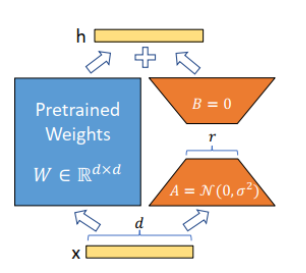

Concept Sliders
论文标题：Concept Sliders: LoRA Adaptors for Precise Control in Diffusion Models 阅读时间：2023-11-30 阅读目的：师兄推荐
Introduction
现有的文生图方法无法精确的调节连续属性（例如人的年龄或天气强度）。
文章提出了一种可解释的概念滑块来满足这个需求。
概念滑块解决了以往方法未能很好解决的几个问题。直接修改提示语可以控制许多图像属性，但由于输出对提示语-种子组合的敏感性，改变提示语往往会大幅改变整体图像结构（imagic），
PromptToPrompt需要对每个新概念进行单独的推理，而且只能支持有限的同时编辑。这些方法需要设计一个适合单个图像的提示，而不是学习一个简单的通用控制，而且如果不仔细提示，可能会引入概念之间的纠缠，例如在修改年龄时改变种族。
相比之下，概念滑块提供了轻量级的即插即用适配器，适用于预先训练好的模型，能够在单次推理中对所需概念进行精确、连续的控制，并具有高效的组合和最小的纠缠
概念滑块还可以用来解决两个文生图的关键问题： 1. 修复手部畸形 2. 增强图像逼真度
Related Work
图像编辑
引导模型
模型编辑
本文的方法可以视为是一种模型编辑，通过应用lora将语义属性单列出来，并允许对属性进行持续控制
生成模型中语义引导的发展趋势
本文的方法直接训练与语义属性相对应的低阶子空间。通过使用文本或图像对作为监督来优化特定的全局方向
Background
lora

Method
概念滑块其实也就是一个学会了概念方向的lora模型，例如age关于（old，young）就构成了一个概念对，概念滑块的目的就是通过Lora的方式，当lora对应权重变大时，增加或减少特定属性的表达概念，让SD意识到生成的图像应该越来越老。
其实SD从大量图片中可以学习到关于old和young的概念，但是一直没有办法引导出来。
文本概念（如图）
- 在SD上分三个文本生成三个噪声
- 在lora上使用目标概念作为本文生成噪声
- 优化两个步骤之间噪声的L2 loss
图像概念
图像概念就是用多个数据对来进行学习，这些数据对最好除了想要学习的概念外都保持一致。
训练时给图像对添加噪声，然后让SD+lora去预测噪声，优化lora，让噪声和添加的噪声差距最小。